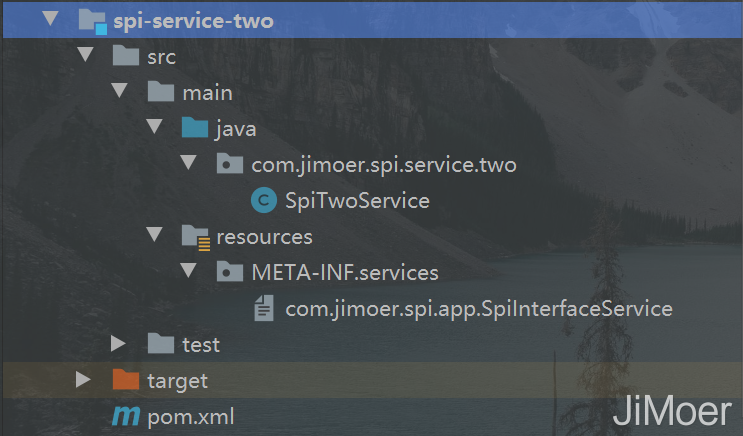

- AQS 万字图文全面解析.md.html
- Docker 镜像构建原理及源码分析.md.html
- ElasticSearch 小白从入门到精通.md.html
- JVM CPU Profiler技术原理及源码深度解析.md.html
- JVM 垃圾收集器.md.html
- JVM 面试的 30 个知识点.md.html
- Java IO 体系、线程模型大总结.md.html
- Java NIO浅析.md.html
- Java 面试题集锦（网络篇）.md.html
- Java-直接内存 DirectMemory 详解.md.html
- Java中9种常见的CMS GC问题分析与解决（上）.md.html
- Java中9种常见的CMS GC问题分析与解决（下）.md.html
- Java中的SPI.md.html
- Java中的ThreadLocal.md.html
- Java线程池实现原理及其在美团业务中的实践.md.html
- Java魔法类：Unsafe应用解析.md.html
- Kafka 源码阅读笔记.md.html
- Kafka、ActiveMQ、RabbitMQ、RocketMQ 区别以及高可用原理.md.html
- MySQL · 引擎特性 · InnoDB Buffer Pool.md.html
- MySQL · 引擎特性 · InnoDB IO子系统.md.html
- MySQL · 引擎特性 · InnoDB 事务系统.md.html
- MySQL · 引擎特性 · InnoDB 同步机制.md.html
- MySQL · 引擎特性 · InnoDB 数据页解析.md.html
- MySQL · 引擎特性 · InnoDB崩溃恢复.md.html
- MySQL · 引擎特性 · 临时表那些事儿.md.html
- MySQL 主从复制 半同步复制.md.html
- MySQL 主从复制 基于GTID复制.md.html
- MySQL 主从复制.md.html
- MySQL 事务日志(redo log和undo log).md.html
- MySQL 亿级别数据迁移实战代码分享.md.html
- MySQL 从一条数据说起-InnoDB行存储数据结构.md.html
- MySQL 地基基础：事务和锁的面纱.md.html
- MySQL 地基基础：数据字典.md.html
- MySQL 地基基础：数据库字符集.md.html
- MySQL 性能优化：碎片整理.md.html
- MySQL 故障诊断：一个 ALTER TALBE 执行了很久，你慌不慌？.md.html
- MySQL 故障诊断：如何在日志中轻松定位大事务.md.html
- MySQL 故障诊断：教你快速定位加锁的 SQL.md.html
- MySQL 日志详解.md.html
- MySQL 的半同步是什么？.md.html
- MySQL中的事务和MVCC.md.html
- MySQL事务_事务隔离级别详解.md.html
- MySQL优化：优化 select count().md.html
- MySQL共享锁、排他锁、悲观锁、乐观锁.md.html
- MySQL的MVCC（多版本并发控制）.md.html
- QingStor 对象存储架构设计及最佳实践.md.html
- RocketMQ 面试题集锦.md.html
- SnowFlake 雪花算法生成分布式 ID.md.html
- Spring Boot 2.x 结合 k8s 实现分布式微服务架构.md.html
- Spring Boot 教程：如何开发一个 starter.md.html
- Spring MVC 原理.md.html
- Spring MyBatis和Spring整合的奥秘.md.html
- Spring 帮助你更好的理解Spring循环依赖.md.html
- Spring 循环依赖及解决方式.md.html
- Spring中眼花缭乱的BeanDefinition.md.html
- Vert.x 基础入门.md.html
- eBay 的 Elasticsearch 性能调优实践.md.html
- 不可不说的Java“锁”事.md.html
- 互联网并发限流实战.md.html
- 从ReentrantLock的实现看AQS的原理及应用.md.html
- 从SpringCloud开始，聊微服务架构.md.html
- 全面了解 JDK 线程池实现原理.md.html
- 分布式一致性理论与算法.md.html
- 分布式一致性算法 Raft.md.html
- 分布式唯一 ID 解析.md.html
- 分布式链路追踪：集群管理设计.md.html
- 动态代理种类及原理，你知道多少？.md.html
- 响应式架构与 RxJava 在有赞零售的实践.md.html
- 大数据算法——布隆过滤器.md.html
- 如何优雅地记录操作日志？.md.html
- 如何设计一个亿级消息量的 IM 系统.md.html
- 异步网络模型.md.html
- 当我们在讨论CQRS时，我们在讨论些神马？.md.html
- 彻底理解 MySQL 的索引机制.md.html
- 最全的 116 道 Redis 面试题解答.md.html
- 有赞权限系统(SAM).md.html
- 有赞零售中台建设方法的探索与实践.md.html
- 服务注册与发现原理剖析（Eureka、Zookeeper、Nacos）.md.html
- 深入浅出Cache.md.html
- 深入理解 MySQL 底层实现.md.html
- 漫画讲解 git rebase VS git merge.md.html
- 生成浏览器唯一稳定 ID 的探索.md.html
- 缓存 如何保证缓存与数据库的双写一致性？.md.html
- 网易严选怎么做全链路监控的？.md.html
- 美团万亿级 KV 存储架构与实践.md.html
- 美团点评Kubernetes集群管理实践.md.html
- 美团百亿规模API网关服务Shepherd的设计与实现.md.html
- 解读《阿里巴巴 Java 开发手册》背后的思考.md.html
- 认识 MySQL 和 Redis 的数据一致性问题.md.html
- 进阶：Dockerfile 高阶使用指南及镜像优化.md.html
- 铁总在用的高性能分布式缓存计算框架 Geode.md.html
- 阿里云PolarDB及其共享存储PolarFS技术实现分析（上）.md.html
- 阿里云PolarDB及其共享存储PolarFS技术实现分析（下）.md.html
- 面试最常被问的 Java 后端题.md.html
- 领域驱动设计在互联网业务开发中的实践.md.html
- 领域驱动设计的菱形对称架构.md.html
- 高效构建 Docker 镜像的最佳实践.md.html
- 捐赠
Java中的SPI
前言
最近在面试的时候被问到SPI了，没回答上来，主要也是自己的原因，把自己给带沟里去了，因为讲到了类加载器的双亲委派模型，后面就被问到了有哪些是破坏了双亲委派模型的场景，然后我就说到了SPI，JNDI，以及JDK9的模块化都破坏了双亲委派。 然后就被问，那你说说对Java中的SPI的理解吧。然后我就一脸懵逼了，之前只是知道它会破坏双亲委派，也知道是个怎么回事，但是并没有深入了解，那么这次我就好好的来总结一下这个知识吧。
什么是SPI
SPI全称Service Provider Interface，字面意思是提供服务的接口，再解释详细一下就是Java提供的一套用来被第三方实现或扩展的接口，实现了接口的动态扩展，让第三方的实现类能像插件一样嵌入到系统中。
咦。。。 这个解释感觉还是有点绕口。 那就说一下它的本质。
将接口的实现类的全限定名配置在文件中（文件名是接口的全限定名），由服务加载器读取配置文件，加载实现类。实现了运行时动态为接口替换实现类。
SPI示例
还是举例说明吧。
我们创建一个项目，然后创建一个module叫spi-interface。
 在这个module中我们定义一个接口：
在这个module中我们定义一个接口：
/**
* @author jimoer
**/
public interface SpiInterfaceService {
/**
* 打印参数
* @param parameter 参数
*/
void printParameter(String parameter);
}
再定义一个module，名字叫spi-service-one，pom.xml中依赖spi-interface。 在spi-service-one中定义一个实现类，实现SpiInterfaceService 接口。
package com.jimoer.spi.service.one;
import com.jimoer.spi.app.SpiInterfaceService;
/**
* @author jimoer
**/
public class SpiOneService implements SpiInterfaceService {
/**
* 打印参数
*
* @param parameter 参数
*/
@Override
public void printParameter(String parameter) {
System.out.println("我是SpiOneService:"+parameter);
}
}
然后再spi-service-one的resources目录下创建目录META-INF/services，在此目录下创建一个文件名称为SpiInterfaceService接口的全限定名称，文件内容写入SpiOneService这个实现类的全限定名称。
效果如下：
 再创建一个module，名称为：spi-service-one，也是依赖spi-interface，并且定义一个实现类SpiTwoService 来实现SpiInterfaceService 接口。
再创建一个module，名称为：spi-service-one，也是依赖spi-interface，并且定义一个实现类SpiTwoService 来实现SpiInterfaceService 接口。
package com.jimoer.spi.service.two;
import com.jimoer.spi.app.SpiInterfaceService;
/**
* @author jimoer
**/
public class SpiTwoService implements SpiInterfaceService {
/**
* 打印参数
*
* @param parameter 参数
*/
@Override
public void printParameter(String parameter) {
System.out.println("我是SpiTwoService:"+parameter);
}
}
目录结构如下：

下面再创建一个用来测试的module，名为：spi-app。 pom.xml中依赖
pom.xml中依赖spi-service-one和spi-service-two
<dependencies>
<dependency>
<groupId>com.jimoer.spi</groupId>
<artifactId>spi-service-one</artifactId>
<version>1.0-SNAPSHOT</version>
</dependency>
<dependency>
<groupId>com.jimoer.spi</groupId>
<artifactId>spi-service-two</artifactId>
<version>1.0-SNAPSHOT</version>
</dependency>
</dependencies>
创建测试类
/**
* @author jimoer
**/
public class SpiService {
public static void main(String[] args) {
ServiceLoader<SpiInterfaceService> spiInterfaceServices = ServiceLoader.load(SpiInterfaceService.class);
Iterator<SpiInterfaceService> iterator = spiInterfaceServices.iterator();
while (iterator.hasNext()){
SpiInterfaceService sip = iterator.next();
sip.printParameter("参数");
}
}
}
执行结果：
我是SpiTwoService:参数
我是SpiOneService:参数
通过运行结果我们可以看到，已经将SpiInterfaceService接口的所有实现都加载到了当前项目中，并且执行了调用。
 这整个代码结构我们可以看出SPI机制将模块的装配放到了程序外面，就是说，接口的实现可以在程序外面，只需要在使用的时候指定具体的实现。并且动态的加载到自己的项目中。
SPI机制的主要目的：
一是为了解耦，将接口和具体实现分离开来；
二是提高框架的扩展性。以前写程序的时候，接口和实现都写在一起，调用方在使用的时候依赖接口来进行调用，无权选择使用具体的实现类。
这整个代码结构我们可以看出SPI机制将模块的装配放到了程序外面，就是说，接口的实现可以在程序外面，只需要在使用的时候指定具体的实现。并且动态的加载到自己的项目中。
SPI机制的主要目的：
一是为了解耦，将接口和具体实现分离开来；
二是提高框架的扩展性。以前写程序的时候，接口和实现都写在一起，调用方在使用的时候依赖接口来进行调用，无权选择使用具体的实现类。
SPI的实现
那么我们来看一下SPI具体是如何实现的呢？ 通过上面的例子，我们可以看到，SPI机制的核心代码是下面这段：
ServiceLoader<SpiInterfaceService> spiInterfaceServices = ServiceLoader.load(SpiInterfaceService.class);
那么我们来看一下ServiceLoader.load()方法的源码：
public static <S> ServiceLoader<S> load(Class<S> service) {
ClassLoader cl = Thread.currentThread().getContextClassLoader();
return ServiceLoader.load(service, cl);
}
看到Thread.currentThread().getContextClassLoader()；我就明白是怎么回事了，这个就是线程上下文类加载器，因为线程上下文类加载器就是为了做类加载双亲委派模型的逆序而创建的。
使用这个线程上下文类加载器去加载所需的SPI服务代码，这是一种父类加载器去请求子类加载器完成类加载的行为，这种行为实际上是打通了，双亲委派模型的层次结构来逆向使用类加载器，已经违背了双亲委派模型的一般性原则，但也是无可奈何的事情。 《深入理解Java虚拟机（第三版）》
虽然知道了它是破坏双亲委派的了，但是具体实现，还是需要具体往下看的。
在ServiceLoader里找到具体实现hasNext()的方法了，那么继续来看这个方法的实现。
 hasNext()方法又主要调用了hasNextService()方法。
hasNext()方法又主要调用了hasNextService()方法。
// 固定路径
private static final String PREFIX = "META-INF/services/";
private boolean hasNextService() {
if (nextName != null) {
return true;
}
if (configs == null) {
try {
// 固定路径+接口全限定名称
String fullName = PREFIX + service.getName();
// 如果当前线程上下文类加载器为空，会用父类加载器（默认是应用程序类加载器）
if (loader == null)
configs = ClassLoader.getSystemResources(fullName);
else
configs = loader.getResources(fullName);
} catch (IOException x) {
fail(service, "Error locating configuration files", x);
}
}
while ((pending == null) || !pending.hasNext()) {
if (!configs.hasMoreElements()) {
return false;
}
pending = parse(service, configs.nextElement());
}
// 后面next()方法中判断当前类是否已经出现化的时候要用
nextName = pending.next();
return true;
}
主要就是去加载META-INF/services/路径下的接口全限定名称的文件然后去里面找到实现类的类路径将实现类进行类加载。
继续看迭代器是如何取出每一个实现对象的。那就要看ServiceLoader中实现了迭代器的next()方法了。
 next()方法主要是nextService()实现的，那么继续看nextService()方法。
next()方法主要是nextService()实现的，那么继续看nextService()方法。
private S nextService() {
if (!hasNextService())
throw new NoSuchElementException();
String cn = nextName;
nextName = null;
Class<?> c = null;
try {
// 直接加载类，无需初始化（因为上面hasNext()已经初始化了）。
c = Class.forName(cn, false, loader);
} catch (ClassNotFoundException x) {
fail(service,
"Provider " + cn + " not found");
}
if (!service.isAssignableFrom(c)) {
fail(service,
"Provider " + cn + " not a subtype");
}
try {
// 将加载好的类实例化出对象。
S p = service.cast(c.newInstance());
providers.put(cn, p);
return p;
} catch (Throwable x) {
fail(service,
"Provider " + cn + " could not be instantiated",
x);
}
throw new Error(); // This cannot happen
}
看到这里就可以明白了，是如何创建出对象的了。先在hasNext()将接口的实现类进行加载并判断是否存在接口的实现类，然后在next()方法中将实现类进实例化。
总结
Java中使用SPI机制的功能其实有很多，像JDBC、JNDI、以及Spring中也有使用，甚至RPC框架（Dubbo）中也有使用SPI机制来实现功能。 这次就总结到这里了，以后起码也能在面试的时候说出点内容了。
© 2019 - 2023 Liangliang Lee. Powered by gin and hexo-theme-book.